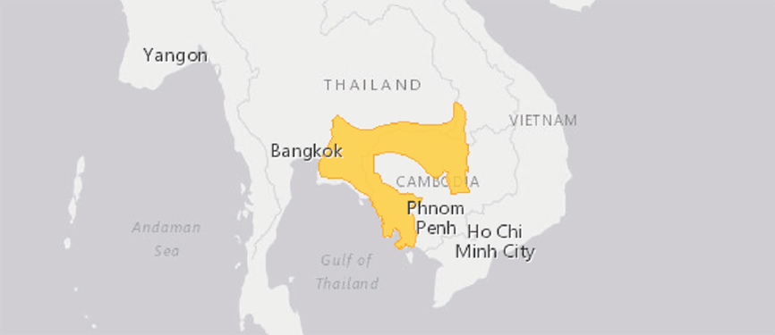

KAPPENGIBBON
HYLOBATES PILEATUS
Die Säuglinge der Kappengibbons sind zunächst cremefarbig. Im Alter von einem Jahr wechseln sie ihre Fellfarbe in silbrige und gelbbraune Partien. Die erwachsenen Weibchen bleiben bei dieser Jugendfärbung. Männchen jedoch wechseln ihre Fellfarbe während der Pubertät im Alter von sechs bis acht Jahren in eine fast vollständig schwarze Fellfärbung. Gibbonfamilien sind unter sich sehr friedlich. Es kommt kaum zu Streitereien. So fressen zwei Gibbons problemlos von derselben Frucht. Kleinkinder kriechen nie auf den Rücken der Mutter. Sie halten sich am Bauch fest, selbst bei den wildesten Hangelpartien der Mutter.
Steckbrief
| Verwandtschaft | Altweltaffen, Menschenaffen, Gibbons |
|---|---|
| Lebensraum | Regenwald, immergrüner Trockenwald bis 1500 Meter über Meer |
| Lebenserwartung | 40 Jahre |
| Futter | Früchte, Blumen, Triebe, Blätter und Insekten |
| Lebensweise | Baumbewohnend |
Verbreitung
Bedrohunsstatus

Karte